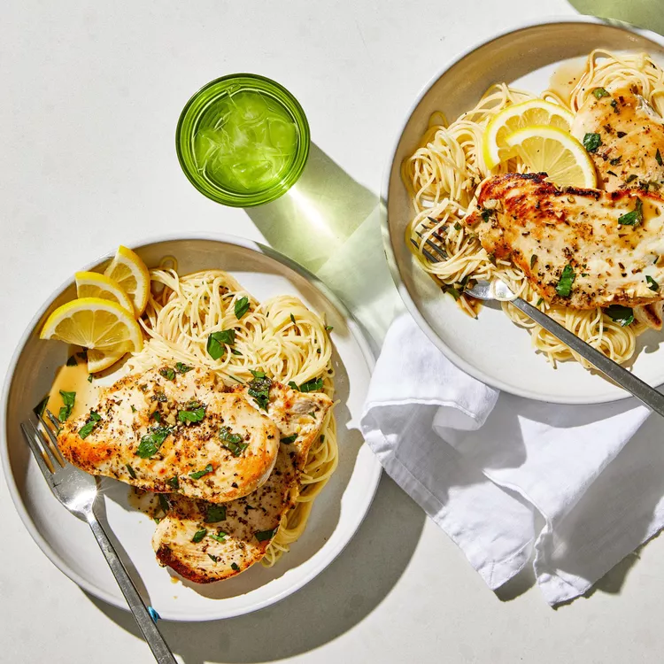

Home
Simple Lemon Herb Chicken

Description
Juicy chicken breasts brightened with lemon, oregano, and parsley
Ingredients
- 2 (5 ounce) skinless, boneless chicken breast halves
- 1 medium lemon, juiced, divided
- salt and freshly ground black pepper to taste
- 1 tablespoon olive oil
- 1 pinch dried oregano
- 2 sprigs fresh parsley, chopped, for garnish
Steps
- Step 1: Place chicken in a bowl; pour 1/2 of the lemon juice over chicken and season with salt.
- Step 2: Heat olive oil in a medium skillet over medium-low heat. Place chicken into hot oil. Add remaining lemon juice and oregano; season with black pepper. Cook chicken until golden brown and the juices run clear, 5 to 10 minutes per side. An instant-read thermometer inserted into the center should read at least 165 degrees F (74 degrees C).
- Step 3: Garnish chicken with parsley to serve.